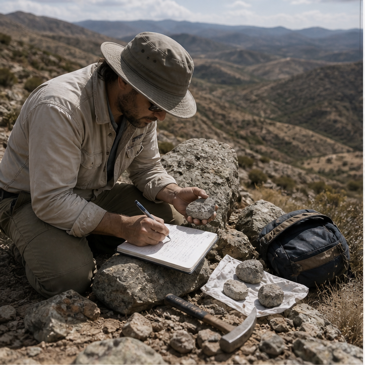
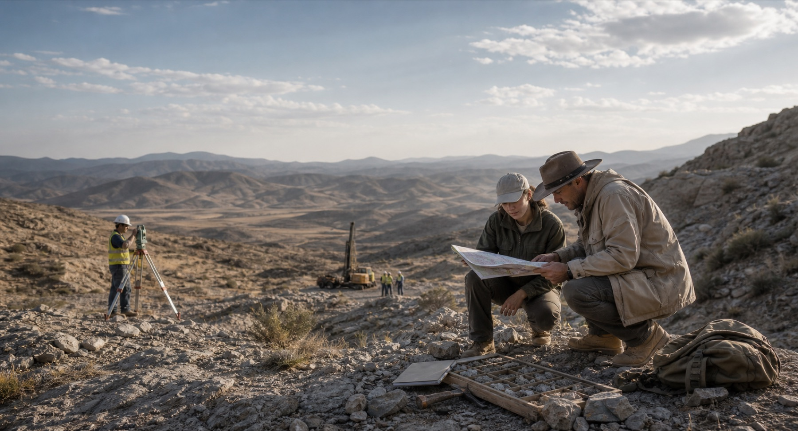
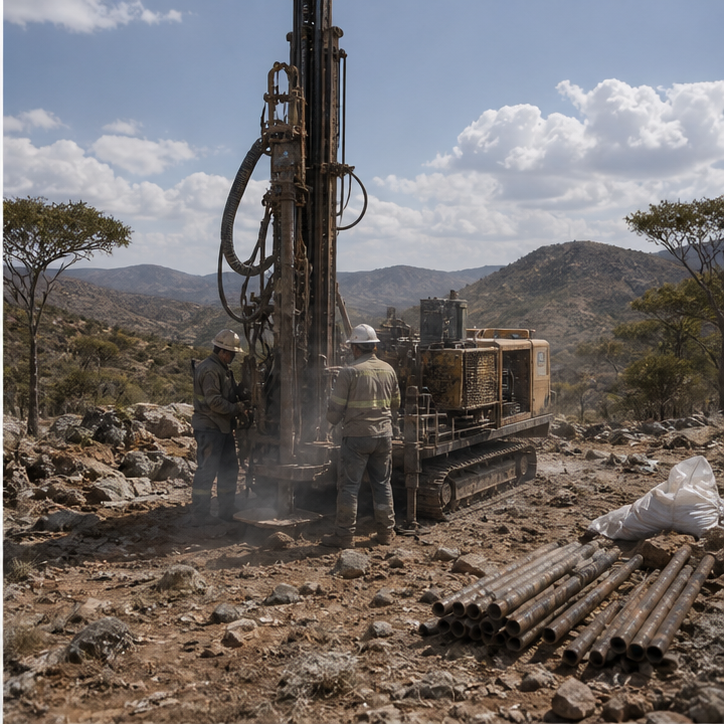

East Ridge Survey
Surface mapping and trench review designed to understand colored stone continuity, grade behavior, and practical development potential.

Exploration Projects
Survey data, sampling programs, and regional partnerships guide the next generation of gemstone and mineral prospects. Exploration is approached as a disciplined decision-making process where field evidence, regional context, and commercial judgment are evaluated together rather than in isolation.


Surface mapping and trench review designed to understand colored stone continuity, grade behavior, and practical development potential.

Core logging, drilling access, and sampling strategy refinement used to sharpen decisions before larger-scale capital commitment.